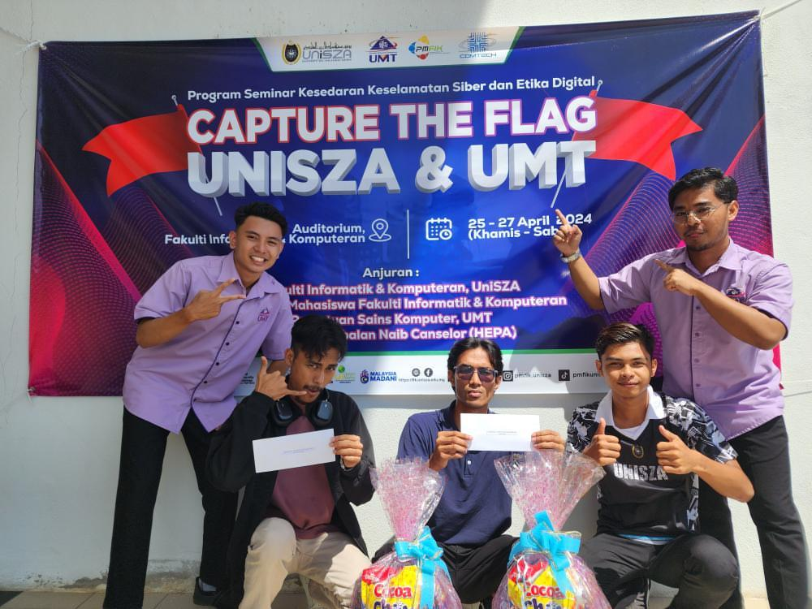

I want to build my career in offensive security. That means thinking like an attacker to find weaknesses in networks, web apps and APIs, proving the impact, and reporting them properly before real attackers get there first.
A penetration tester is an ethical hacker who is given permission to attack a company's systems. Within an agreed scope, they look for weaknesses in networks, web apps and APIs, safely exploit them to show the real impact, and write a clear report on how to fix them.
Good networking knowledge (TCP/IP, common services, Active Directory), Linux and Windows basics, web app security (OWASP Top 10) and tools like Nmap, Burp Suite and Metasploit. On top of that, Python or Bash scripting, following a proper methodology (PTES, OWASP WSTG) and writing clear reports.
Scanners can pick up known CVEs, but they usually miss business logic bugs, weak access control and small issues that can be chained into a bigger attack. A human tester shows what an attacker can really do. With the Cyber Security Act 2024 now in force in Malaysia, organisations running critical systems have more reason to get their security tested.
In my internship, I build APIs, middleware, blockchain integration and digital signing, and UAT has taught me to test systems step by step against requirements. With my CTF experience and networking background, I understand how systems should work and where they usually break.
I don't have an offensive security cert yet, and I haven't worked on a real client engagement. I still need to improve in web app exploitation with Burp Suite, Active Directory attacks, privilege escalation and writing proper pentest reports.
Join a CREST-accredited company and work on web, API and network tests under senior testers.
Kali Linux, Nmap, Burp Suite, Metasploit, HTB / TryHackMe labs.
Lead full engagements from scoping until the client debrief, and run red team exercises. I also want to specialise in testing post-quantum and blockchain-based systems.
Active Directory, C2 frameworks, cloud (AWS / Azure).
At IExploTech, I developed APIs and middleware, implemented ML-DSA-65 post-quantum digital signatures, connected a Laravel system to Hyperledger Fabric and took part in UAT. Seeing how these systems are built helps me understand how they can be attacked.
role ............ Intern, IExploTech Sdn Bhd
stack ........... Laravel · API / Middleware · Hyperledger Fabric
crypto .......... ML-DSA-65 (NIST FIPS 204)
testing ......... User Acceptance Testing
pentest_angle ... trust boundaries, auth between services, signature verification paths
> status: in progress_
Solved challenges under time pressure by analysing network traffic in Wireshark and disk images in Autopsy to find hidden flags. It's the same kind of digging needed during recon and post-exploitation in a pentest.

Nexagate is a Malaysian cybersecurity company and a CREST-accredited penetration testing provider. They have more than 15 years of experience working with government, banking, telco, healthcare and energy clients across ASEAN. Joining a CREST-accredited team means I can learn a proper, internationally recognised way of testing from day one, while helping protect organisations that Malaysians use every day.
In my internship, I worked on the same kind of systems that pentesters test: APIs, middleware, digital signing and blockchain integration. Since I've built them myself, I have a better idea where the weak points usually are. My UAT experience also taught me to write test cases and record results properly, which is important for a good pentest report.
I'm comfortable working across many layers: electronics and IoT hardware, networking (CCNA), APIs, cryptography and AI. Knowing how a system works from the hardware up to the application helps me connect small findings into a realistic attack path.
I don't have real client engagement experience or an offensive cert yet. My plan is to take the eJPT, practise regularly on Hack The Box and TryHackMe, and learn Nexagate's way of testing from experienced testers.